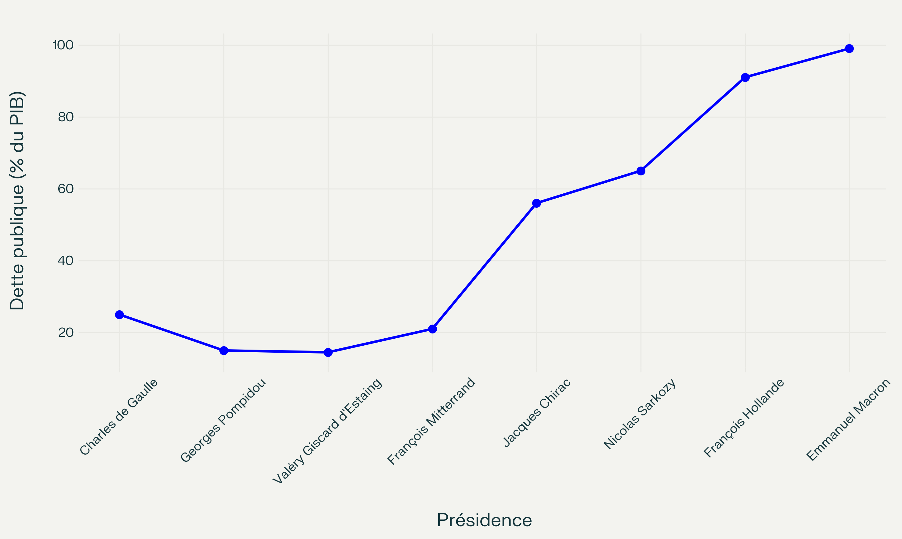

Évolution de la dette publique française par présidence
Graphique de l'évolution de la dette

Détail de l’évolution de la dette par président
| Président | Début mandat | Fin mandat | Dette publique (% du PIB) | Évolution sur le mandat |
|---|---|---|---|---|
| Charles de Gaulle | 1959 | 1969 | 25 % → 15 % | -10 points |
| Georges Pompidou | 1969 | 1974 | 15 % → 14,5 % | -0,5 point |
| Valéry Giscard d’Estaing | 1974 | 1981 | 14,5 % → 21 % | +6,5 points |
| François Mitterrand | 1981 | 1995 | 21 % → 56 % | +35 points |
| Jacques Chirac | 1995 | 2007 | 56 % → 65 % | +9 points |
| Nicolas Sarkozy | 2007 | 2012 | 65 % → 91 % | +26 points |
| François Hollande | 2012 | 2017 | 91 % → 99 % | +8 points |
| Emmanuel Macron | 2017 | 2025* | 99 % → 113 % (2024) | +14 points (en cours) |